赤(#FF0000系)・黄(#FFFF00系)・蛍光色は全面禁止。出典：ブランド.md
| フォント | ヒラギノ角ゴ ProN → Noto Sans JP（フォールバック） |
| ウェイト | Medium(500)固定。Bold(700)禁止 |
| サイズ | 52px固定（実寸1920×1080基準／全動画統一） |
| 色 | ウォームホワイト #FFFDF9 |
| 縁取り | 黒 2px |
| 影 | ドロップシャドウ rgba(0,0,0,0.5) |
| 位置 | 画面下中央（セーフゾーン内） |
| 行数 | 1行のみ。2行表示禁止。長い文は分割して順次表示 |
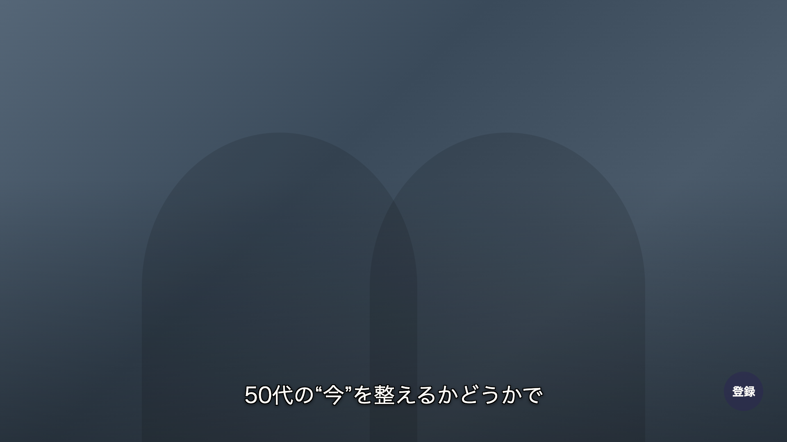
長文の分割表示例（1文を2つの発言に分けて順次表示）：
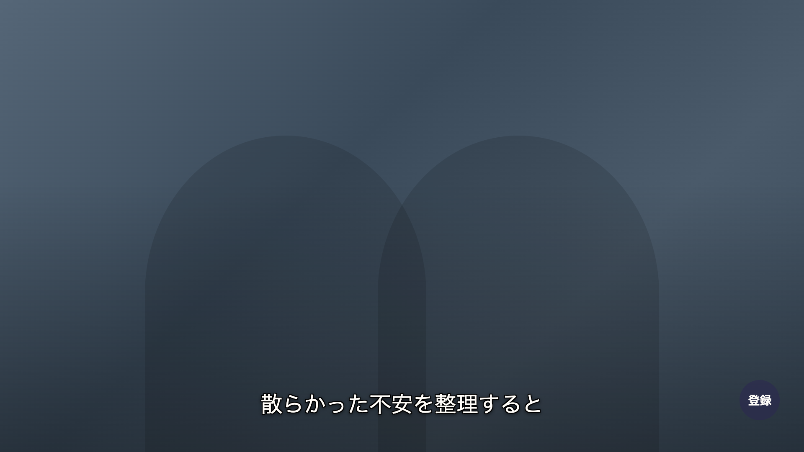
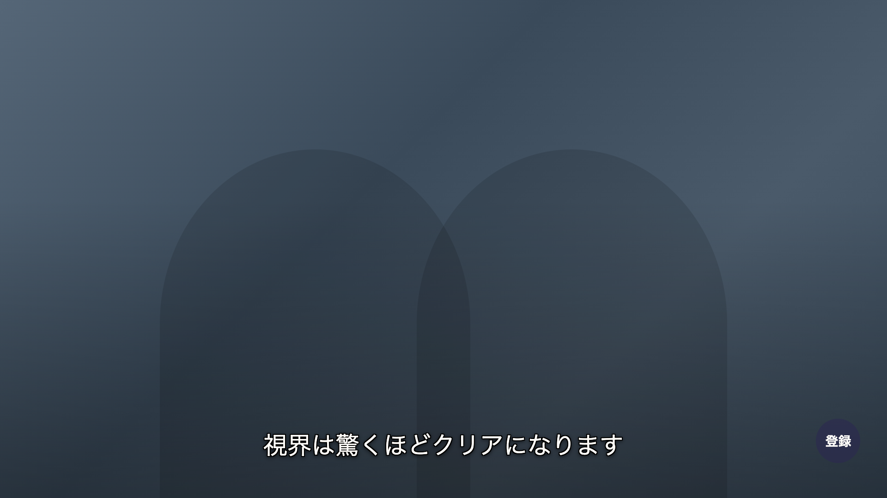
| フォント | ヒラギノ明朝 ProN → Noto Serif JP（フォールバック） |
| サイズ | 70px固定（フル52pxと1:1.35比で階層明確化／全動画統一） |
| 色 | ウォームホワイト #FFFDF9（通常）/ ゴールド #C5A059（特に重要） |
| 背景 | 半透明ディープモーブ帯 rgba(43,40,80,0.85) |
| 位置 | 画面中央 or やや上 or 画面下中央 （OPは画面中央やや上） |
| 配置の原則 | 人物の顔（話者・ゲスト）に被らない位置を選ぶ。バストアップ構図のときは画面下中央を避ける |
| 行数 | 最大2行。3行禁止。改行は句読点（、。）の直後で行う |
| ルール | 強調テロップ表示中はフルテロップを消す |
| 頻度 | 1動画あたり5-10箇所 |
仕様上3パターンが許容される。いずれも人物の顔に被らない位置を優先する。画面下中央はフルテロップと位置を共有するため、対談中の強調表示では特に人物位置を確認する。
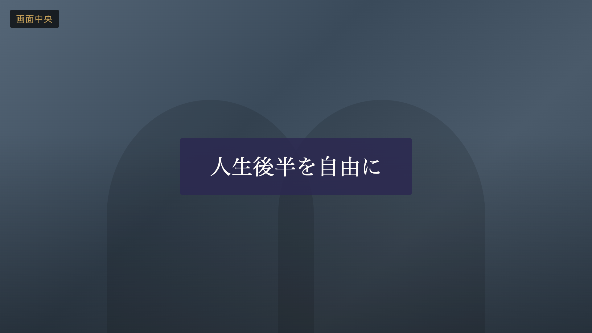
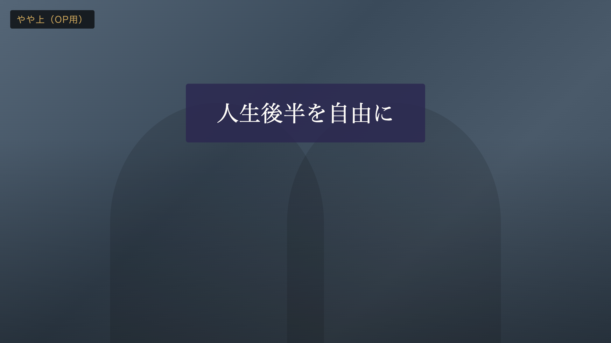
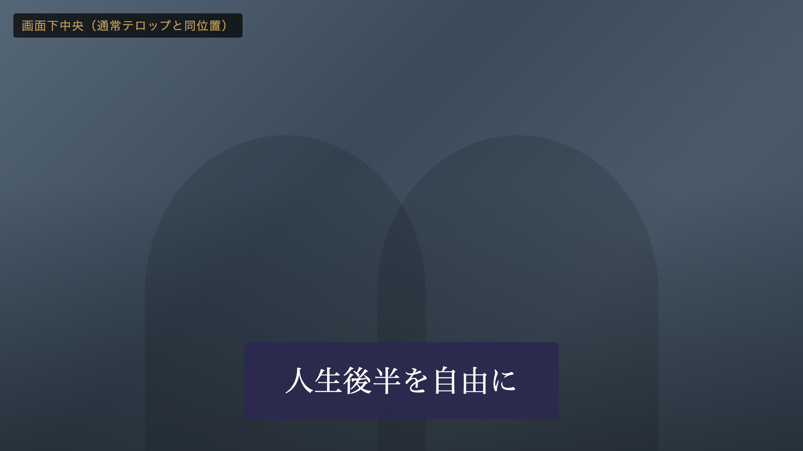
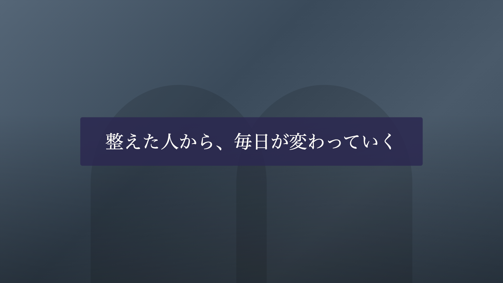
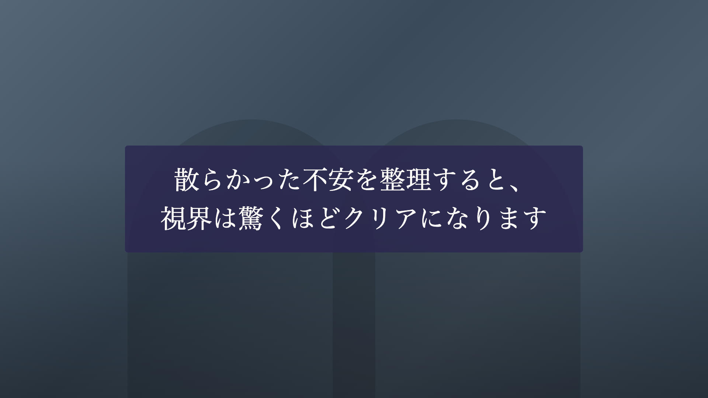
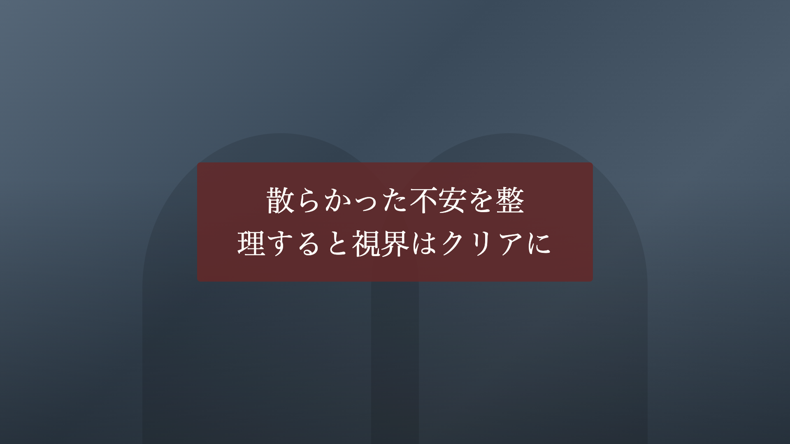
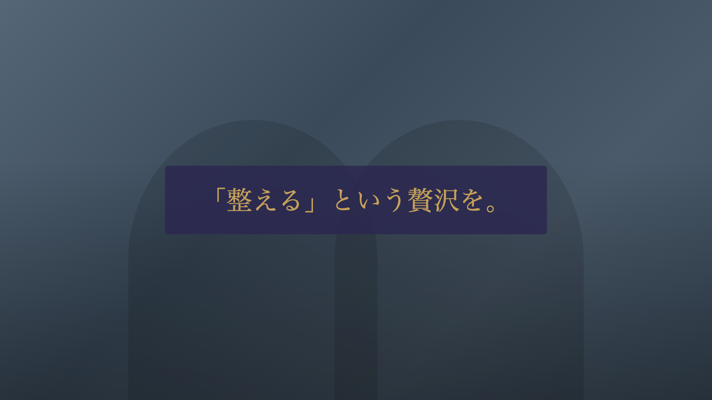
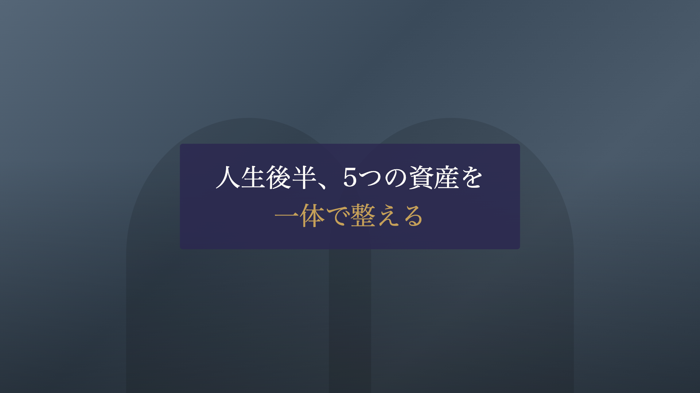
| 名前フォント | ヒラギノ明朝 ProN → Noto Serif JP |
| 名前色 | ウォームホワイト #FFFDF9 |
| 肩書フォント | ヒラギノ角ゴ ProN → Noto Sans JP（ゴシック体） |
| 肩書色 | ゴールド #C5A059 |
| 背景 | 半透明ディープモーブ 角丸8px |
| 位置 | 画面左下 |
| 表示 | ゲスト初登場時＋シーン切り替え時に再表示。4-5秒 |
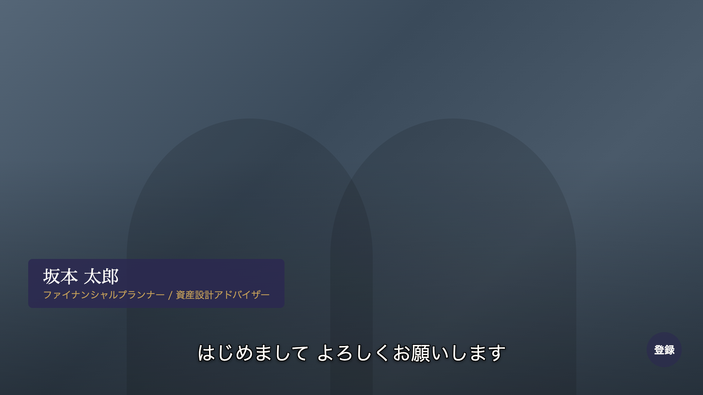
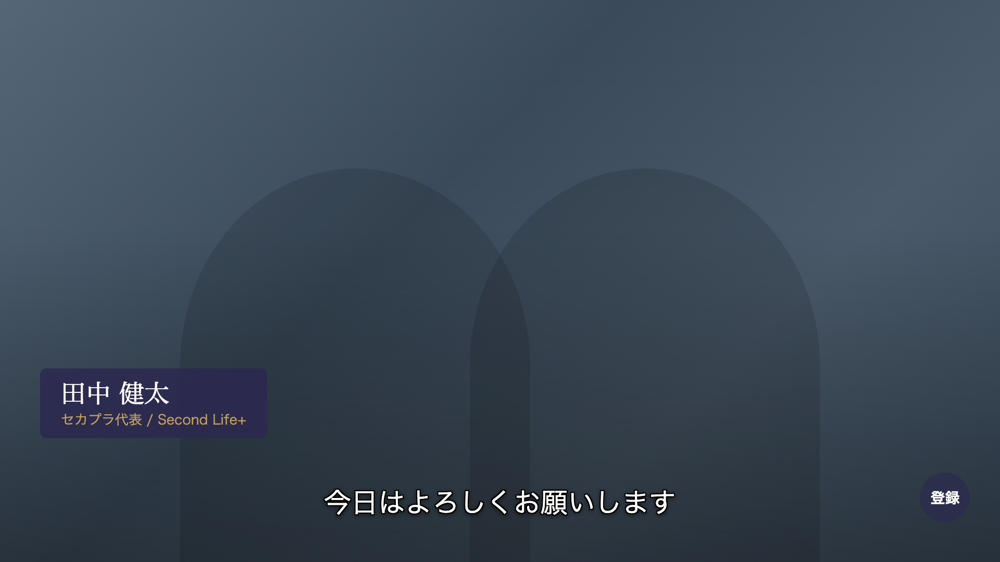
50-60代の老眼＋スマホ視聴では半角アラビア数字が最も瞬時認識しやすい。金融・健康の具体値は数字の鮮度が信頼の源。全角数字は可読性も格式も中途半端。
| 場面 | 表記 | 例 |
|---|---|---|
| 金額 | 半角＋3桁区切り＋漢字単位 | 月3,000円 / 120万円 / 5,000万円 |
| 年代・年齢 | 半角 | 50代 / 62歳 / 50-60代 |
| 年数・期間 | 半角 | 10年後 / 3ヶ月 / 週2本 |
| 時間・分数 | 半角 | 15分 / 20-25分 |
| 割合・% | 半角 | 70% / 20-25% |
| 順位・番号 | 半角 | 第1位 / 5つの資産 / 3つのポイント |
| 人数 | 半角 | 顧客3名 / 1,000人 |
| 日付 | 半角 | 2026年4月 / 4月15日 |
| 熟語・慣用表現 | 漢数字 | 一歩ずつ / 二度と / 十人十色 / 百年人生 |
| 詩的・概念的表現 | 漢数字 | 一つひとつ整える / 一生の習慣 |
| ことわざ・格言 | 漢数字 | 千里の道も一歩から |
判断基準：「数えているか、語っているか」 — 数えている（量・具体値）→ 半角 / 語っている（概念・情緒）→ 漢数字。同じ「1」でも「1年で120万円増」は半角、「一年発起」は漢数字。
数字強調の例（強調テロップ限定。フルテロップでは色変えしない）：
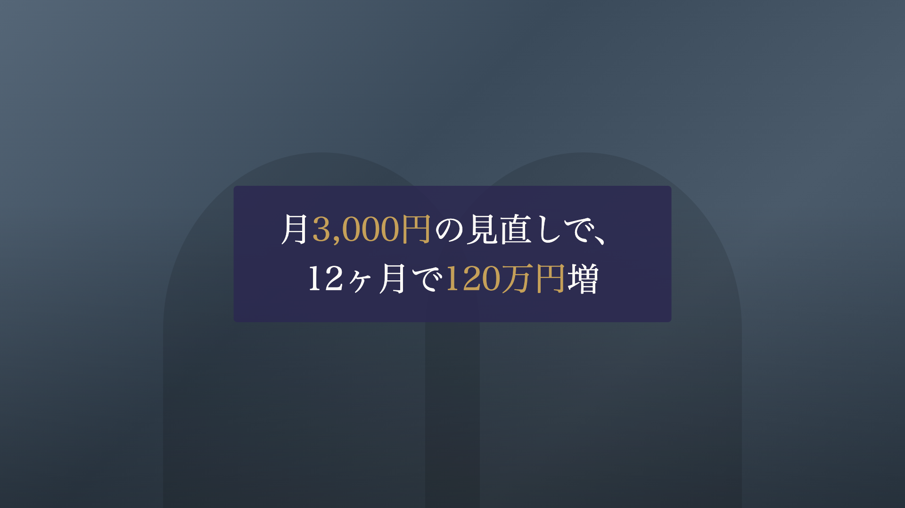
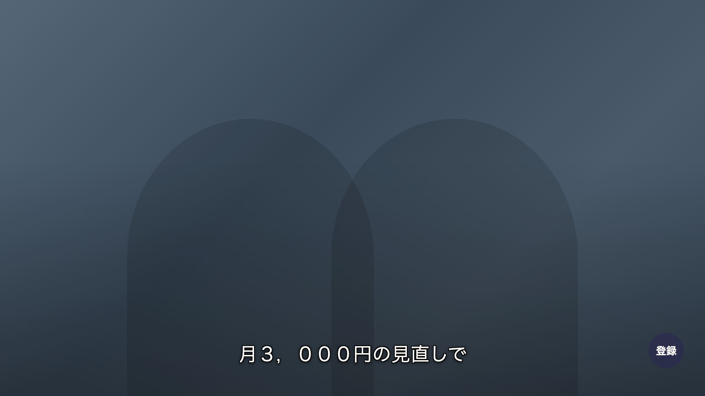
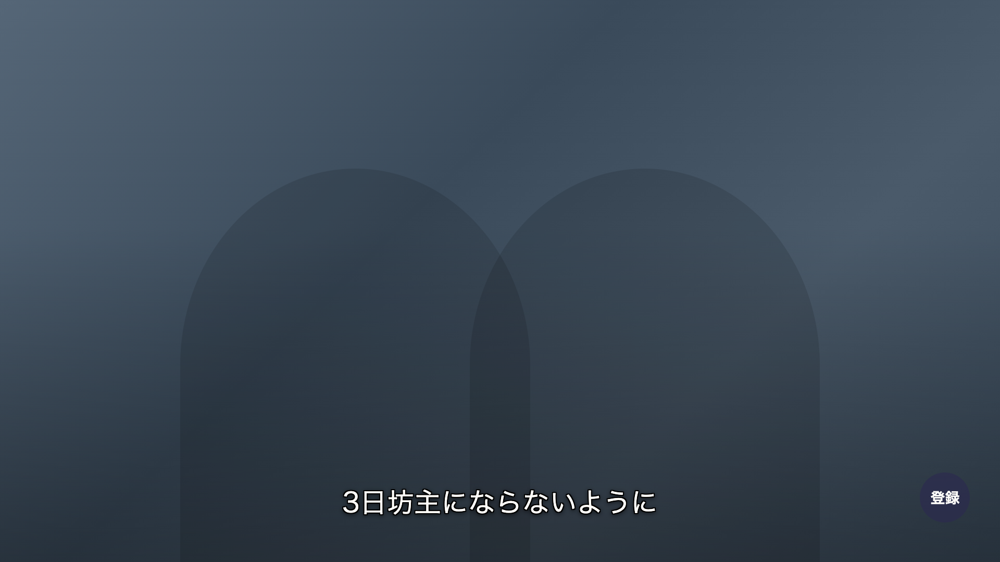
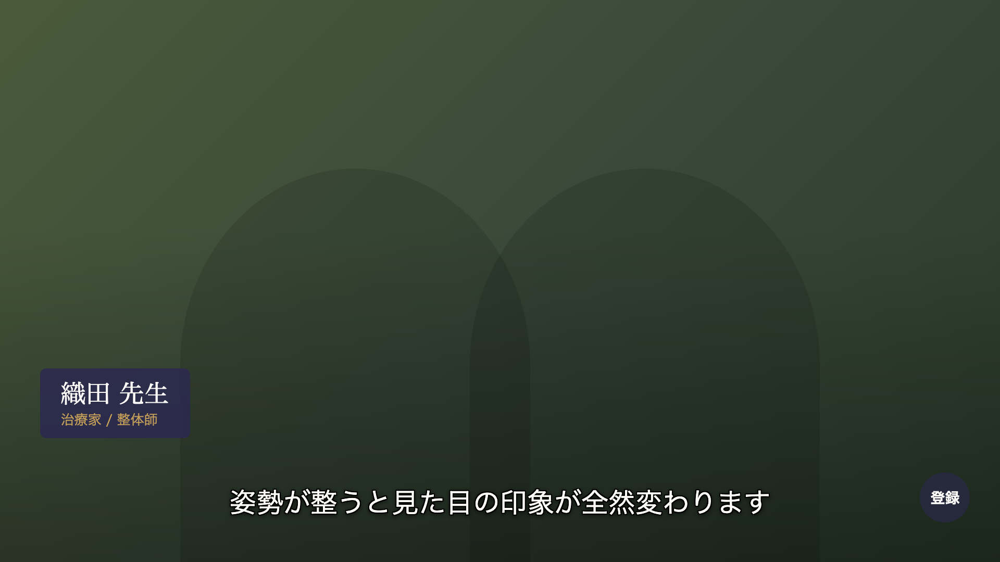
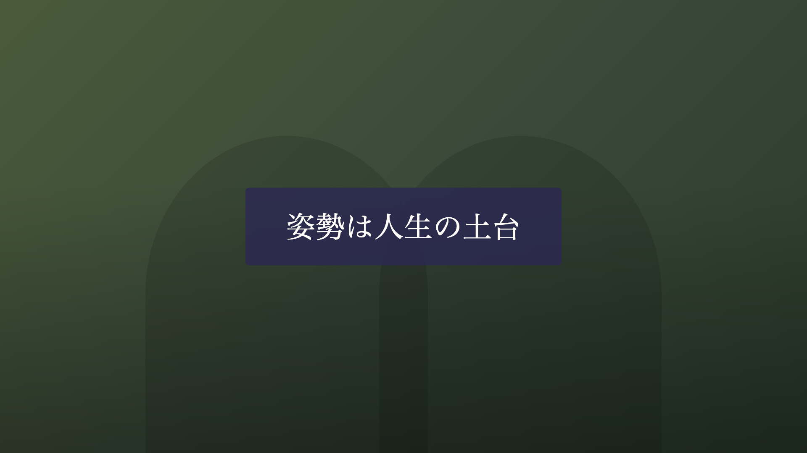